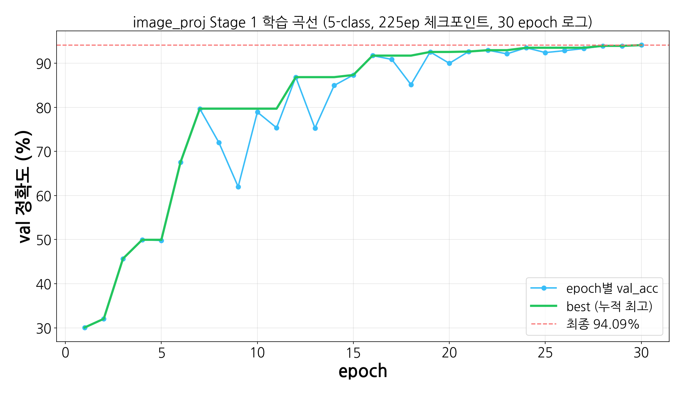
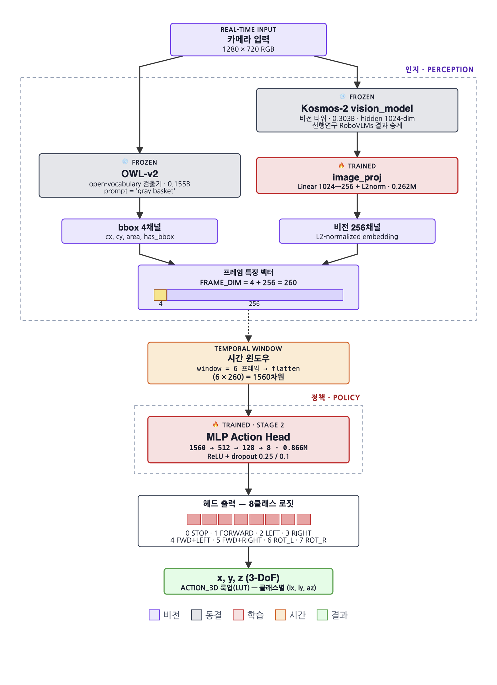
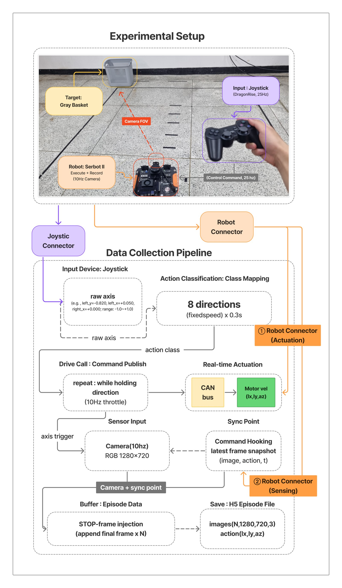
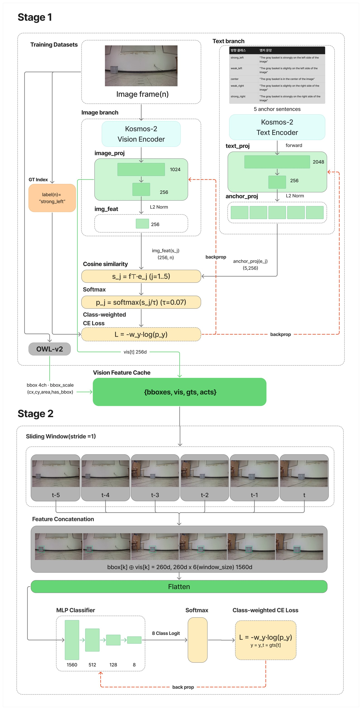
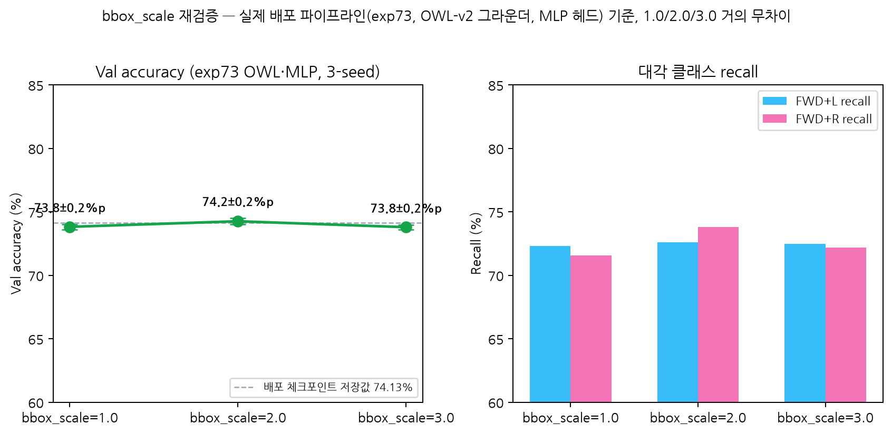
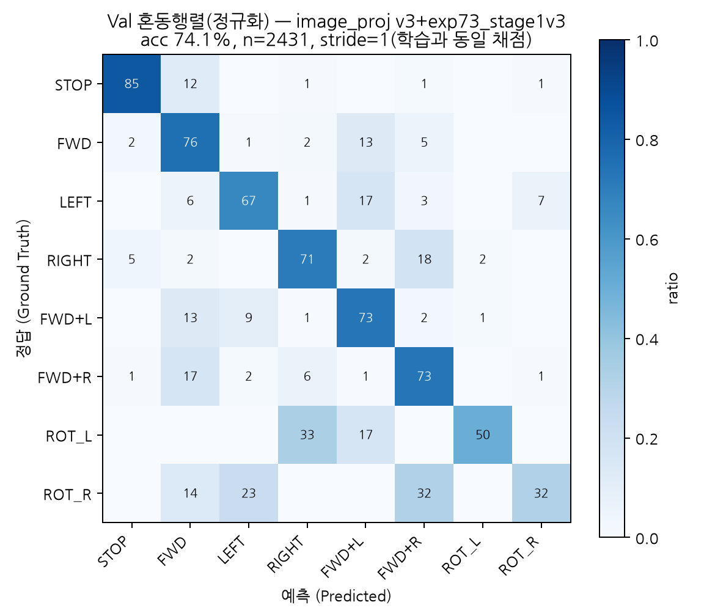
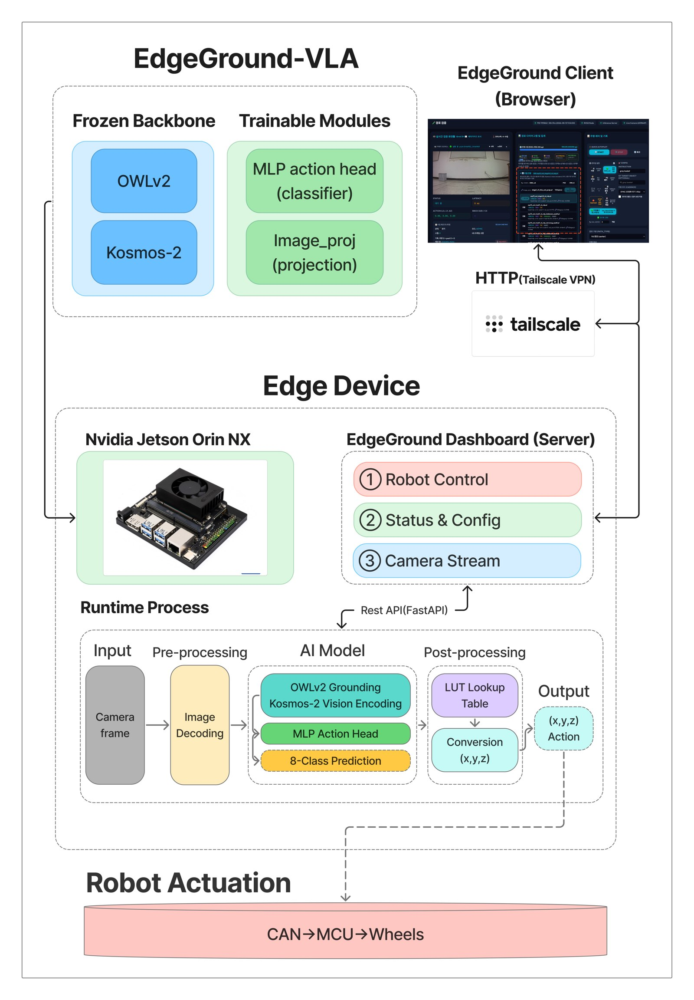
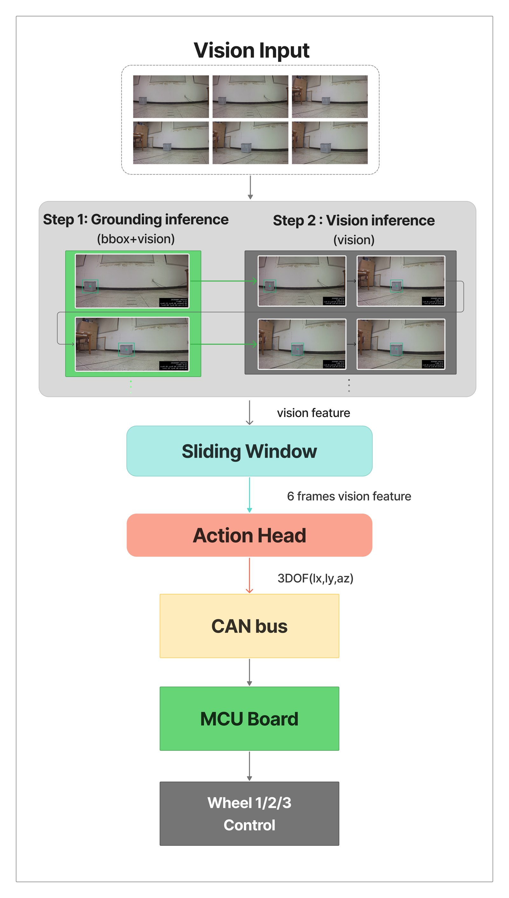
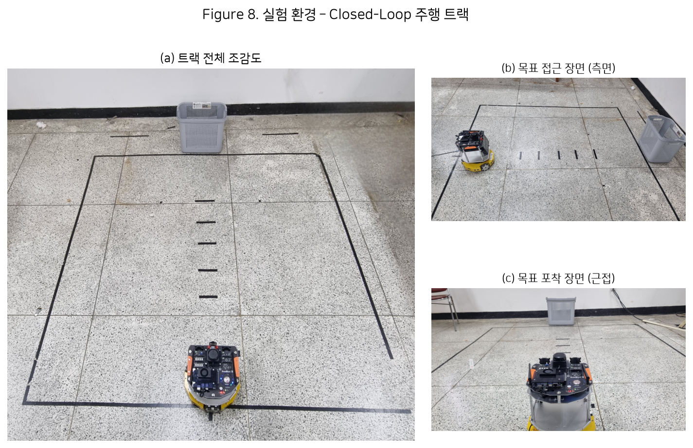

✅ 배포 전환 완료 — 아래 "높음" 항목 지금부터 갱신 대상
image_proj 5-class 학습 완료(val_acc 94.09%) →
Stage 2 A/B 검증(오프라인은 -4%p로 안 좋아 보였으나 실기
100건 재검증 95/100으로 확인, 좌측 80%→95% 개선) → go.sh/
DEFAULT_STAGE1 배포 전환까지 완료. 상세: F8.
2026-08-07 갱신 — F6·89/100은 실제 데이터로 갱신 완료. F4는 논문에서 완전히 제외하기로
결정(내부 실험 근거일 뿐 최종 배포 모델과 직결되지 않음 — 아래 F4 카드 참조).
| 항목 | 왜 바뀌는가 | 상태 |
|---|---|---|
| F6 Val 혼동행렬 | image_proj가 바뀌어 헤드 입력 임베딩이 달라짐 — cadence-aligned 채점 기준 val_acc 52.5%
(n=501, confusion_matrix_stage1v3.png), 채점 방식-학습 방식 불일치 각주 포함.
ROT_L/R은 표본 0.82%·0.89%로 소수 표본 노이즈 가능성 명시 |
✅ 완료 — 텍스트+PNG 둘 다 신버전
(logs/eval_confusion_matrix_stage1v3.log 근거), 초고·model_architecture_brief 반영 |
| F4 CH64 64-12 (baseline 7.1%→stride5 24.2%→cadence-aligned 28.3%) | 신버전으로 재측정하려면 옛 학습방식(exp73_held_aware_train.py)
자체를 다시 돌려야 해서 배보다 배꼽이 큼 — 최종 배포 모델과 직결되지 않는 내부 실험 근거 |
✅ 논문에서 제외 결정 — 초고·워크리스트 양쪽에서 삭제, 이 카드만 경위 기록용으로 유지 |
| 89/100(89.0%) 실기 성공률 | soda 100건 전체 재검증(계획보다 확대 — 좌측만이 아니라 전체 재검증) | ✅ 95/100(95.0%)으로 갱신 완료 — 초고·워크리스트·model_architecture_brief 전부 반영 |
F1 다이어그램의 image_proj 0.262M 박스 캡션 |
체크포인트가 stage1_v3_5cls_owl_projs.pt로 바뀌어 "5-class·08/07"로 캡션 갱신 |
✅ 완료 |
model_architecture_brief.html 배포 이력 표(체크포인트 경로/시각 목록) |
새 체크포인트 배포 시점·경로 행 추가 | ✅ 완료 |
| F5 그라운딩 threshold 곡선 | OWL-v2 검출 임계값 문제라 image_proj와 무관 — 교체 불필요 | 해당없음 |
| F2/F3 런타임·하드웨어 도표, F7 V6 프레임 그림 | 모델 값과 무관한 정적 구조/데이터 그림 — 교체 불필요 | 해당없음 |
📋 docx 노란 하이라이트 — 최신화 필요 문단 4곳
..._초안_0806.docx의 노란 하이라이트(제가 드린 답변을 직접 붙여넣으신 부분) 25개
문단을 전부 다시 뽑아 최신 상태와 대조했습니다. 아래 4곳은 이후 정정 사항(용어 교체·사실
정정)이 반영되지 않은 채로 남아 있습니다. docx는 저희가 직접 건드리지 않으니, 아래 "교체
문장"을 그대로 복사해서 해당 노란 부분에 덮어써 주세요.
scripts/plot_grounding_success_curve.py 재실행 결과 threshold 0.25 → 정탐 94.9%·오탐 0.0% (296프레임, 목표있음 217·없음 79)캐시 →
캐시 → cadence-aligned 윈도우(window 6, stride 5, majority-vote 라벨) → 1560차원 flatten → MLPActionHead(512→128→8) → class-weighted CE, AdamW 5e-4, 300ep, cosine, seed 0/1/2
Adam도 실제 코드(train_one())는 AdamW라 함께 정정.train_exp54_stage1_v2_frame_level.py가 image_proj를 AdamW로 직접
학습시킴을 코드로 확인(아래 정정 항목 참조). "유일한 학습 대상"이라는
서술은 Stage 2 기준으로만 맞고 전체 파이프라인 기준으로는 부정확.stage1_v2_projs.pt"가 나오던 2곳(1.1절 표, 6절 배포 문단) 전부
stage1_v3_5cls_owl_projs.pt로 교체 완료(docx 직접 수정, LibreOffice 변환으로
파일 무결성 확인).

30 epoch 로그 그대로 플롯 —
새 학습 없이 logs/train_stage1_v3_5cls_owl.log에서 뽑음. 이미 초고 1.2절에
반영 완료, docx에는 아직 없음.
Kosmos-2 vision_model(시각 문맥 담당): 0.303B(비전 타워만), 동결(다만 뒤의 image_proj는 별도 사전학습됨), 출력 256채널(L2 정규화), 매 프레임 호출, 지연 54ms, 프롬프트 불필요.
지연의 비대칭(1901.7ms vs 54ms)이 호출 주기 설계(1.4절)의 근거 — 느린 검출기만 3프레임마다 갱신하고 빠른 비전 인코더는 매 프레임 갱신한다.
☐ 그림/표로 전환 필요 — 0807_A 빨간 질문 답변 반영분
..._초안_0807_A.docx에 빨간 교수님 질문 34곳 바로 아래에 파란 답변을 텍스트로
채웠습니다. 그중 아래 항목들은 텍스트보다 그림/표로 보여주는 게 더 명확합니다. 위치·개수 기준
체크리스트입니다.
| ☐ | 내용 | 전환 | 위치 (docx 문단 기준) |
|---|---|---|---|
| ✅ | 8-class 로짓 → 3DoF(x,y,z) 룩업(LUT) 매핑 (FORWARD/LEFT/RIGHT/FWD+L/FWD+R/ROT_L/ROT_R/STOP → x,y,z) |
표 1개 | §58 "8클래스→3자유도 변환" 답변 자리 — stage2_v2_inference_server.py의
실제 ACTION_3D 딕셔너리 값 그대로 표로 삽입 완료(0807_A docx) |
| ✅ | Stage 2 학습 파라미터 (window/bbox_scale/num_classes/optimizer=AdamW/epochs/scheduler/class weight) | 표 1개 | §129-134 "학습 파라미터" 나열 문단 바로 다음 — 표 삽입 완료(0807_A docx), 중복 서술 문단 삭제 |
| ✅ | 조이스틱 데이터 수집 + 액션 기록 과정 | 그림 2개 (신규 제작 + soda 제공) | §83-85 데이터 수집 파이프라인 자리 — ① 실제 H5 프레임(strong_right_right_curve ep.)+WASD 매핑,
② soda 제공 비동기 파이프라인 구조도(publish_and_move()/on_command() 훅, 2026-08-08).
둘 다 0807_B docx 삽입 완료 |
| ✅ | Mobility VLA 계열 경량 모델 비교 (NoMaD·ViNT·GNM 등) | 표 1개 | §31 "SmolVLA는 Manipulator" 답변 자리 — WebSearch로 GNM 8.7M·ViNT 31M 확인, NoMaD는 공식 수치 미공개로 노란 밑줄 표기. REFERENCES에 [8][9][10] 추가, 0807_A docx 반영 완료 |
| ✅ | 추론 파이프라인 순서도 (F2), 하드웨어 CAN 구성도 (F3) | 그림 2개 | §74-75, §146-147 — 기존 F2/F3 그대로 삽입 완료(추가 작업 불필요) |
진행 현황: 표 3개(학습 파라미터·8클래스→3DoF LUT·Mobility VLA 경량모델 비교)·그림 1개(데이터 수집) 전부 완료. 레퍼런스 목록 점검(§229-230)은 그림/표 대상 아님 — 별도 트래킹.
실제 0807_A docx 반영 내용 (최신)

실제 H5 에피소드(strong_right_right_curve) 27/82 프레임 + 그 프레임의 실측 액션 +
mobile_vla_data_collector.py의 실제 WASD→(lx,ly,az) 매핑. §83-85 자리.

조이스틱(DragonRise, 25Hz pygame 폴링)과 카메라(10Hz, 독립 스레드)가 완전히 비동기로 동작 —
ctrl.publish_and_move() 호출이 CAN bus 구동과 on_command() 기록 훅을 동시에 트리거하고,
그 순간 카메라의 최신 프레임을 끌어와 짝지어 H5에 저장함(STOP 프레임 중복 억제, 종료 시 STOP×5 합성).
soda가 mona_dashboard.py/gradio_data_collector.py 실제 구현을 근거로 제작(commit 1574635d,
inference-integration·monavla-driving 양쪽 push 완료). 위 사진 기반 그림과 함께 §83-85 자리에 배치.
| class idx | class name | x | y | z |
|---|---|---|---|---|
| 0 | STOP | +0.00 | +0.00 | +0.00 |
| 1 | FORWARD | +1.15 | +0.00 | +0.00 |
| 2 | LEFT | +0.00 | +1.15 | +0.00 |
| 3 | RIGHT | +0.00 | -1.15 | +0.00 |
| 4 | FWD+L | +1.15 | +1.15 | +0.00 |
| 5 | FWD+R | +1.15 | -1.15 | +0.00 |
| 6 | ROT_L | +0.00 | +0.00 | +0.25 |
| 7 | ROT_R | +0.00 | +0.00 | -0.25 |
§58 자리. argmax(8-class 로짓) → 위 표 → CAN 통신으로 MCU 전달.
| 파라미터 | 값 | 의미 |
|---|---|---|
| window | 6 프레임 | 입력으로 사용하는 연속 프레임 수 |
| bbox_scale | 3.0 | bbox 좌표 정규화 스케일 |
| num_classes | 8 | 8-class 방향 로짓 |
| optimizer | AdamW, lr=5e-4 | 가중치 감쇠 포함 Adam 변형 |
| epochs | 300 | 학습 반복 수 |
| scheduler | CosineAnnealingLR | 코사인 스케줄로 lr 감쇠 |
| class weight | 1/빈도 정규화 | FORWARD 71~74% 편중 보정 |
§129-134 자리, 기존 줄바꿈 텍스트 삭제 후 표로 교체.
| 모델 | 파라미터 | 구조 | 비고 |
|---|---|---|---|
| GNM (2022) | 8.7M | 경량 CNN 정책, cross-embodiment | 가장 작음, 언어 지시 미지원 |
| ViNT (2023) | 31M | Transformer 인코더 + 서브골 플래닝 | GNM보다 크지만 여전히 경량, 이미지 목표 기반 |
| NoMaD (2024) | 미공개(ViNT 대비 15배 이상 적음) | ViNT 인코더 재사용 + diffusion policy 헤드 | 공식 파라미터 수 미명시 |
| 본 연구 (EdgeGround-VLA) | 학습 파라미터 1.128M | frozen OWL-v2·Kosmos-2 + 경량 projection + MLP 헤드 | GNM보다도 학습 파라미터가 작음(frozen 인코더는 별도) |
§31 자리, REFERENCES에 [8]GNM·[9]ViNT·[10]NoMaD 추가. 노란 밑줄 = NoMaD 파라미터 수치 미확인(공식 미공개) 표시.
✅ 완료 — image_proj Stage 1 학습 + 배포 전환 (2026-08-07)
배포 중이던 image_proj(stage1_v2_projs.pt, 2026-05-21·150ep·HSV 라벨)가
액션 헤드(225ep)와 세대가 다르다는 걸 발견해 학습·검증·배포 전환까지 완료. 계획:
plan_20260806.
최종 결론(2026-08-07) — 배포 전환 완료. 오프라인 지표만으로는
옵션A(실기 실패)·옵션B(val_acc -4%p)가 모두 나빠 보였으나, 실제 100건 실기 재검증에서
95/100 성공(구버전 89/100 대비 개선, 특히 좌측 80%→95%)으로 확인 — go.sh·
DEFAULT_STAGE1을 신버전으로 전환함. 오프라인 지표만으로 배포 여부를 단정하면 안
된다는 CH64의 교훈이 다시 확인된 사례.
F8. image_proj Stage 1 학습 — 5-class(강좌/약좌/중앙/약우/강우), 225ep, OWL-v2 라벨 → 배포 완료
| train_acc | val_acc | 비고 | |
|---|---|---|---|
| 배포 중인 학습본(5-class, 225ep, OWL-v2) | 96.10% | 94.09% | 2026-08-07 학습, gap +2.01%p(정상) |
Step 3(오프라인) → Step 5(실기) 순서로 검증:
| 단계 | 결과 |
|---|---|
| Step 3-A — 기존 헤드 그대로 + 새 image_proj (오프라인/실기 둘 다 확인) | soda 실기에서 실패 — 신구 image_proj 임베딩 코사인 유사도 0.058(거의 직교). 같은 프레임(weak_left, cx=0.222)에 구버전=LEFT(정답에 가까움) vs 신버전=STOP 예측 — 분포 밖(OOD) 붕괴. 이 조합은 실제로 못 씀 — 헤드도 반드시 같이 학습해야 함 |
| Step 3-B — 새 image_proj 위에서 헤드 학습(3-seed, 오프라인 val_acc) | val_acc mean 73.8%(best 74.1%) —
구버전 기준(owl/v6/mlp, 3-seed) mean 77.74%(best 78.0%) 대비 약 4%p 낮음.
오프라인만 보면 배포 근거 부족해 보였음 |
| Step 5 — Step 3-B 체크포인트로 soda 100건 실기 재검증 | 95/100 성공 — 강좌 19/20(95%)·
약좌 19/20(95%)·강우 19/20(95%)·약우 18/20(90%)·중앙 20/20(100%). 구버전 89/100 대비
전체 개선, 특히 좌측이 80%→95%로 확실히 개선. minum이
episode_log.csv 100행을 runtime_config 기준으로 직접
재검증(soda 보고와 일치) |
최종 결론:
오프라인 val_acc 하락(-4%p)이 실기 성능 하락을 의미하지 않았음 — 오히려 실기에서는 개선.
배포 전환 완료(go.sh의 S1_PT/S2_PT,
stage2_v2_inference_server.py의 DEFAULT_STAGE1). 구버전은
runs/v5_nav/mlp/shared/stage1_v2_projs.pt에 그대로 보존(롤백용).

🆕 신규 그래프 (0807 초고 반영)

🔗 이미지 원본 열기 (../v5/figures/stage1_v3_training_curve.png) style="max-width:100%;background:#fff;border-radius:6px;border:1px solid #1e293b">30 epoch 수렴 곡선(94.09%) —
train_stage1_v3_5cls_owl.log에서 그대로 뽑은 것, 새 학습/테스트 없음.
2026-08-07 결정 — old/new 비교 막대그래프(위치별·클래스별)는
"학습 전" 프레이밍 자체가 불필요하다는 판단으로 전부 제거하고 현재 배포 상태
단독 서술로 통일(파일은 docs/v5/figures/에 보존, 참조만 안 함).
단, 0807 초고(paper 본문)에는 구버전이 HSV 휴리스틱 라벨
기반이라는 사실이 드러나 불필요한 의문을 살 수 있어 이 두 비교 그림은 넣지 않고, 이 페이지
(내부 추적용)에만 유지함.
F9. Ablation — 비전 백본 파라미터 효율성 (신규 발굴, CH67 기존 데이터)

🔵 0805 라운드 — 초안 최초 검토
EdgeGround-VLA_..._초안_0805.docx 전수 추출(빨간 run 120개 · 25개 단락) 기준.
전체 8개 절 중 6.Deploy 절만 로봇 담당자 확인 필요로 남기고 나머지는 초고 완성.
FIGURE 구조도 — 3개
F1. 모델 파이프라인 구조도
08/06 추가 수정 — 실선을 프레임 특징 벡터(260차원) 까지로 한정하고 이후 구간(슬라이딩 윈도우→정책→8클래스 로짓)은 점선+배경 패널로 구분, Service Control 표기를 제거하고 초록색
x, y, z (3-DoF) / ACTION_3D
룩업(LUT) 블록으로 교체.
🖼 PNG 보기 · PDF · SVG
F2. 런타임 파이프라인 순서도
추가 수정 — 추론 제어 파라미터 요약 패널에
stop_mode 관련 사실을 정확히 구분해 명시: 실제
실행/실험은 learned(실행 스크립트 go.sh·gradio_hub.py가
VLA_STOP_MODE=learned로 명시 오버라이드), 코드 인자 자체의 기본값만
proximity. model_architecture_brief.html 4절 표에 있던
중복·상충 행(force_reground_on_miss·연속회전차단 중복)도 함께 정리.
(1차 수정에서 "기본값 proximity가 실제 설정"이라고 잘못
적었다가 재수정함)
🖼 PNG 보기 · PDF · SVG
F3. 하드웨어 연결도 — Jetson↔CAN↔MCU
omni_drive_node.py의
Psd(dev="can0"), vla_control_utils.py의 pop.driving.Driving()).
08/06 재확인 — 0806 red 항목 중 "Serbot II 로봇 보드 구성 —
Jetson과 바퀴 제어 보드가 CAN으로 연결된 그림"은 0805에서 이미 반영된 F3와 동일 요구라
추가 수정 불필요.
🖼 PNG 보기 · PDF · SVG
🛠 F1/F2/F3 원본 SVG 템플릿 직접 편집
figures/*.svg 원본 텍스트를 그대로 불러와 편집합니다 — F1의 박스/화살표/
범례 좌표를 직접 손으로 잡은 그 파일입니다. 왼쪽에서 텍스트나 좌표(x="..",
y="..")를 고치면 오른쪽 미리보기가 즉시 갱신됩니다.
"✅ 반영"을 누르면 실제
docs/v5/figures/*.svg 파일에 즉시 저장되고 PNG/PDF도 자동 재생성되어,
이 페이지·워크리스트·초고에 박혀 있는 이미지가 실시간으로 바뀝니다
(아래 각 F 카드와 초고·워크리스트의 해당 위치에 "최근 수정" 시각이 함께 표시됩니다).
"⬇ SVG 다운로드"는 파일로만 저장하고 싶을 때 씁니다.
새로고침해도 편집 중이던 내용이 유지됩니다 — "반영"을 누르기 전이라도 입력이 브라우저에 임시 저장되고, 마지막으로 열어둔 탭도 기억합니다.
?fig=F2처럼 주소 끝에 붙이면 그 탭으로 바로 열립니다.
✏️ 머메이드 스케치 에디터 (레이아웃 아이디어용)
model_architecture_brief.html의 다이어그램과 동일한 소스로 시작합니다.
FACT-FIX 사실오류 정정
1.2/1.3절 — 헤드 입력 차원·구조
| 초안 | 정정 | |
|---|---|---|
| 입력 차원 | 256 | 1560(6프레임×260) |
| hidden layer | 4개 | 2개(512→128→8) |
| 융합 방식 | "동일 임베딩 공간 매핑" | bbox는 사영 없이 결합(concat) |
요구원문 04 — bbox_scale 적용 범위
[v * bbox_scale for v in bboxes[idx]]).FILL-IN 빈칸 채우기 (제목만 있던 절)
1.4 Serving Control 4개 항목
3. Collection of data / 5.2 학습 방법 / 6. Deploy(부분) / 7. Runtime
NEW-CONTENT 신규 발견·추가
image_proj Stage1 사전학습 절차
F4. CH64 64-12 cadence-aligned 그래프 — 2026-08-07 논문에서 제외 결정
F5/F6. Grounding threshold 곡선 / Val 혼동행렬
현재 배포 헤드 기준 Val 혼동행렬 acc 52.5%(n=501, 단일 체크포인트 seed0). ⚠️ 방법론 각주: 이 평가는 cadence-aligned(stride=5 다수결) 방식으로 라벨을 만드는데, 배포된 헤드는 그 방식이 아니라 일반(stride=1) 윈도우로 학습됐다(`train_exp73_stage1v3_heads.py`) — 채점 방식 자체가 안 맞는다. 실기 검증은 95/100 성공(F8 참조)으로, 오프라인 cadence-aligned 평가와 실기 성능이 여기서도 직결되지 않음을 보여주는 사례.

F7. 데이터 수집 과정 그림 — V6(225ep) 방향별 실촬영 프레임
bbox_dataset_v6_owl.json, 225ep)의 원본
H5에서 방향별(강좌·약좌·중앙·약우·강우) 대표 프레임을 직접 추출 — 별도 촬영이 아니라
실제 학습 데이터 그 자체. 어안렌즈 왜곡·바닥 그리드·바구니 위치 변화가
그대로 보임.
색상 채널 버그 발견·수정 — V6 raw H5는 BGR로 저장되어 있어(
gen_v6_owl_annotation.py·train_exp73_trackA_heads.py
"colorfixed 규격"에서 확인) 최초 추출본은 반전 없이 뽑아 실제 학습 조건과 다른 색이었음.
[:, :, ::-1] BGR→RGB 반전을 적용해 재생성 —
버그판/수정판 나란히 비교.

TERM 용어 대체 제안 (선택)
"다수결 라벨" → "majority-vote 라벨" · "held-out"
held-out validation → episode-disjoint split / unseen episodes (단 held-out도 표준용어라 필수 대체는 아님).
PENDING 로봇 담당자 확인 필요
🟣 0806 라운드 — 교수님 재수정본
..._초안_0806.docx(13→16페이지)를 전수 추출(빨간 run 146개 · 34개 단락,
0805 대비 9건 신규) 후 대조. 노란색 하이라이트(우리 초고를 붙여넣은 흔적) 안에서
구조 변경 지시를 발견.
NEW-CONTENT 이번 라운드에서 새로 나온 질문에 답변
8클래스 로짓 → 3자유도(3-DoF) 변환 — "(?)를 거쳐"의 (?) 규명
ACTION_3D)로 즉시 조회됨.
| 클래스 | 행동 | (lx, ly, az) |
|---|---|---|
| 0 | STOP | (0, 0, 0) |
| 1 | FORWARD | (1.15, 0, 0) |
| 2 | LEFT | (0, 1.15, 0) |
| 3 | RIGHT | (0, −1.15, 0) |
| 4 | FWD+LEFT | (1.15, 1.15, 0) |
| 5 | FWD+RIGHT | (1.15, −1.15, 0) |
| 6 | ROT_L | (0, 0, 0.25) |
| 7 | ROT_R | (0, 0, −0.25) |
LeRobot 내보내기 파이프라인 "별도 구축이 맞는가" — 필수 아님, 이번엔 제외
사용자 결정(2026-08-06) — 논문 제출에 필수는 아니라 이번 라운드에서는 제외.
Kosmos-2 비전 인코더 = CLIP ViT-L/14 표현 검증
STRUCTURE-MOVE 구조 변경 (작성자 지시 발견)
좌우 액션 불균형(21.8%) 분석 — 3절 → 8절(Future Work)로 이동
REFERENCE 참고문헌 감사 (웹서치)
기존 REFERENCES [1][2][4][5] arXiv ID 교차검증
RoboVLMs 인용 누락 발견
arXiv:2412.14058 추가 필요."Mobility VLA에 경량 버전이 있는가" 문헌조사
⚠️ 2026-08 웹검색 기준, 미공개/리뷰중 연구는 반영 못 함.
PENDING 자료 필요해서 보류
노란색 부분 설명 필요 (Table 2 인근)
🕓 변경 이력
이 페이지와 초고를 수정할 때마다 아래에 이어서 기록합니다. 수동으로 docx를 고치실 때 이 순서대로 대조하시면 됩니다.
?fig=F2 쿼리 파라미터로 특정 탭 바로 열기 지원.
redfill_draft_0805.md·
paper_redfill_worklist.html 3곳도 함께 정정) ② hold-aware→cadence-aligned +
Adam→AdamW(2문단) ③ "MLP 헤드 0.866M만"→Stage1+Stage2(1.128M) 정정 ④ Stage1/Stage2 용어
충돌 참고사항. 복사해서 바로 붙여넣을 수 있는 교체 문장 전부 포함.
docs/v5/figures/에 보존, 참조만 뺌). model_architecture_brief.html은
이전 패스에서 이미 정리돼 있어 추가 수정 없음.
go.sh에 셸 export가 없어 실제 운영값이 0.20인지 불확실했던 항목을
soda(실기 담당자)에 확인 요청 → 0.20 확정, 재검토
불필요로 회신 받음. 메커니즘: stage2_v2_inference_server.py의
_restore_runtime_state_env()가 기동 시 logs/stage2_runtime_state.json
(2026-07-30 0.25→0.20 변경 후 영구 저장)을 읽어 Python 내부에서 직접
os.environ["VLA_OWLV2_THRESH"]="0.2" 설정 — 셸 export가 아니라
/proc/PID/environ으로는 안 보였던 것. 그라운더 캐싱 없음·저장/사용 동일
소스·API 오버라이드 불가·프로세스-코드 버전 일치·2026-08-07 101건 로그 전수 0.2 일치까지
6단계로 재점검. 초고(redfill_draft_0805.md "검증 완료된 것" 신설)·워크리스트
검증상태 박스 초록색으로 갱신. 원본 회신:
DATASET_V6_STATUS.md 2026-08-07 항목.
plot_grounding_success_curve.py 재실행,
bbox_dataset_v6_owl.json 클래스 분포 직접 집계)와 대조해 정확함을 재확인 —
수정할 값 없음. 카드에 0807 초고 링크만
누락돼 있어 추가(0805 링크와 함께 병기).
hardware_architecture.svg)를 현재 기준으로 줄 단위 재검토 —
OWL-v2/Kosmos-2 파라미터·grounding_skip_n·CAN 사양·Stage1/Stage2 학습 구분 등
나머지는 전부 정확해 변경 없음. image_proj → 256채널 줄에만
(5-class·08/07 배포)를 추가해 F1과 표기를 맞춤. 재렌더·시각 확인 완료.
"owlv2_thresh old = 0.20(optimal)"라는 깨진
문구 발견(과거 직접 편집 중 손상된 것으로 추정) — "코드 기본 0.25 / 운영 0.20"
으로 복원. F1의 image_proj 박스에 (5-class·08/07) 배포 정보 추가.
F3는 이상 없음 확인. 전부 재렌더 후 시각 검증 완료.
realrobot_position_comparison.png(실기 위치별 89/100→95/100 비교) ②
stage1_v3_training_curve.png(image_proj 30epoch 수렴 곡선, 94.09%) ③
perclass_acc_comparison.png(클래스별 정확도 old/new, LEFT +24.4%p 개선·
ROT_L/R 하락 정직하게 병기). F8 카드와 0807 초고에 반영.
exp73_held_aware_train.py)을 통째로 다시 돌려야 해서 비용 대비 기여가
낮다고 판단, 초고·워크리스트에서 완전히 삭제(이 페이지의 F4 카드는
경위 기록용으로만 남기고 PENDING 처리, KPI 7→6). F5/F6은 구버전(74.98%±0.52%p, LEFT 42%)
옆에 신버전(52.5%, `confusion_matrix_stage1v3.png`, 근거:
logs/eval_confusion_matrix_stage1v3.log)을 나란히 배치 —
낮아 보이는 수치는 신버전 헤드가 cadence-aligned가 아니라 일반 윈도우로 학습됐기 때문이라는
방법론 각주 포함(실기는 95/100으로 정상). 배너·changelog 동기화.
logs/train_stage1_v3_5cls_owl.log의
30 epoch val_acc를 그대로 플롯(새 학습 없이 기존 로그만 사용).
62%까지 일시 하락 후 94.09%로 수렴하는 곡선 확인. 초고 1.2절(Stage 1 하이퍼파라미터
표 바로 아래)에 배치, revision_briefing 복붙 목록에도 추가.
stage1_v2_projs.pt 2곳(1.1절 표·6절 배포 문단)을
stage1_v3_5cls_owl_projs.pt로 직접 수정(LibreOffice 변환으로 무결성
확인). 아직 docx에 없는 신규 콘텐츠 3개(95/100 실기결과·Stage1 하이퍼파라미터·인코더
비교표)는 F8 카드 하단에 복붙용 블록으로 정리.
exp73_stage1v3_trackA_heads.json
근거, PNG 이미지는 아직 미재생성. 89/100→95/100: 위치별
중앙100%·강좌95%·약좌95%·강우95%·약우90% — episode_log.csv 100행 독립검증
완료. 워크리스트의 "미러증강이 89/100을 바꿀 유일한 후보"였던 옛 액션플랜도 "다른 경로
(image_proj)로 목표 달성"으로 주석 추가. F4(CH64 64-12
3단 비교)는 재측정 데이터가 없어 여전히 미착수.
gen_v6_owl_annotation.py·train_exp73_trackA_heads.py
("colorfixed 규격")가 전부 [:, :, ::-1] 반전을 쓴다는 근거로 확인.
F7 이미지 재생성 + 버그판/수정판 비교 페이지
신설. 같은 버그가 진행 중이던 image_proj 5-class 학습
스크립트(train_stage1_v3_5cls_owl.py)에도 있어 중단 후 수정, 재시작함
— 발견이 늦었으면 실제 배포 조건과 다른 색으로 학습될 뻔함.
bbox_dataset_v6_owl.json(225ep) H5에서 방향별
(강좌/약좌/중앙/약우/강우) 대표 프레임을 직접 뽑아 완료. 별도 촬영이 아니라 실제 학습
데이터 그 자체. 신규 파일은 docs/v5/figures/가 아니라
docs/v6/figures/에 분리 배치(V6 전용 자료라 명확히 구분).
PENDING에서 FIGURE로 이동, KPI 6→7·보류 1→0 갱신.
⚠️ 원본 데이터 폴더(
ROS_action/mobile_vla_dataset_v5/)는 V5·V6 에피소드가
섞여 있고 188개 파일이 절대경로로 참조하고 있어 이름은 그대로 유지
(리네임 시 전부 깨짐 확인) — 새로 만드는 자료만 docs/v6/로 분리.
cx, cy, area는 표준 영문(bbox centroid·normalized area)을 초고 첫 등장부에
병기.
"arm": "v6_mirroraug")과 같은 문자열이라
논문 서술에서만 "실험 조건(condition)"으로 교체
(초고 3곳·워크리스트 2곳). 코드/체크포인트의 실제 필드명은 통신 프로토콜에 영향
있어 그대로 유지 — worklist의 JSON 예시 인용 부분은 실제 값이라 손대지 않음.
용어집에 항목 추가.
hold_aware/held_aware)은 그대로 두고
첫 등장 시 각주로 대응 관계만 명시.
scripts/train_exp54_stage1_v2_frame_level.py가 image_proj
(0.262M)를 방향 텍스트 앵커 대조학습으로 실제 학습시키고(AdamW·30epoch), Stage 2
진입 시에만 그 가중치를 불러와 동결함(stage2_v2_inference_server.py).
즉 학습은 Stage 1(image_proj 0.262M) + Stage 2(행동헤드 0.866M) = 총 1.128M이고
"Stage 2 학습 대상"이라는 표현으로 전부 정정. 영향 범위 6곳: 초고, 워크리스트(×2),
model_architecture_brief.html(mermaid·표·범례 ×4, 기존에도 서로 다른 절끼리 상충된 서술이
있었음), revision_briefing 머메이드 사본, F1·F3 SVG 도표.
episode_log.csv 100행을
runtime_config.stage1_path/checkpoint_path 기준으로 독립
재검증(soda 보고와 일치). go.sh의 S1_PT/S2_PT,
stage2_v2_inference_server.py의 DEFAULT_STAGE1을 신버전으로 전환 완료
(soda 원격 편집 — 전체 파일 덮어쓰기 실수로 soda 커스터마이징 124줄을 날릴 뻔했다가
git checkout으로 즉시 복구 후 필요한 3줄만 정확히 재수정). 구버전은
runs/v5_nav/mlp/shared/stage1_v2_projs.pt에 보존(롤백 가능).
F4·F6·89/100은 이제 실제로 갱신이 필요한 상태 — 다음 작업으로 진행 예정.
owl/v6/mlp 77.74% 대비 약 4%p 하락).
결론: 신버전 배포 근거 부족 — 배포 경로는 구버전 유지, Step 4/5 보류.
F4·F6·89/100은 계속 구버전 기준값이 최종값.
~/vla/runs/v5_nav/mlp/stage1_v3_5cls/)로
체크포인트·스크립트·plan.md 전송 완료. F8 카드 신설,
model_architecture_brief.html에 "배포 후보" 표 별도 추가(실제 배포 이력과 분리).
F4·F6·89/100(높음 우선순위)은 Stage 2 학습·soda 좌측
실기 재검증 전까지 아직 옛 값 그대로임 — plan Step 3/5 완료 후 갱신 예정.
scripts/run/go.sh·
scripts/gradio_hub.py(포트 8001) 둘 다 실행 시
VLA_STOP_MODE=learned로 명시 오버라이드하고 있어, 실기/실험에 쓴 실제 설정은
learned입니다. proximity는 코드
인자 자체의 기본값일 뿐 실행에 쓰인 적이 없습니다. F2 SVG·초고(`redfill_draft_0805.md`
회전제어 표)·model_architecture_brief.html 4절 표 3곳 모두 재수정.
figures/runtime_pipeline.svg 요약 패널에 stop_mode 관련 내용 추가.
force_reground_on_miss·연속회전차단 중복/상충 행 정리. 도표 높이
880→900, 패널 확장에 따라 하위 요소 전부 20px 시프트.
(stop_mode 값 자체는 아래 항목에서 재정정됨)
utf8_server.py)에 POST /__save_svg 엔드포인트를 추가해
에디터에서 "✅ 반영"을 누르면 실제 docs/v5/figures/*.svg가 즉시 저장되고
cairosvg로 PNG/PDF도 자동 재생성됨. 이 페이지·워크리스트(a1)·초고(01절)의
이미지가 캐시버스팅으로 즉시 갱신되고, 각 위치에 "최근 수정" 시각이 함께 표시됨
(Last-Modified 헤더 기반). ⚠️ 이 저장은 로컬 파일 시스템에만 반영되며
git 커밋은 별도로 필요.
figures/*.svg 파일을 fetch로 불러와 텍스트 편집 + 실시간 미리보기.
F1/F2/F3 탭 전환, "⬇ SVG 다운로드"로 수정본 저장 가능(브라우저는 로컬 파일을 직접
덮어쓸 수 없어 다운로드 후 전달받아 반영하는 방식). 이전 머메이드 에디터는 레이아웃
스케치용으로 유지.
model_architecture_brief.html과 동일한 소스로 시작.
docs/v5/figures/ 이미지를 직접 클릭 가능한 썸네일로 삽입
(PNG/PDF/SVG 링크 동반). F2(런타임 순서도)·F3(하드웨어 CAN 연결도)는 0806 red 항목과
대조해 추가 수정 불필요 확인(기존 도표가 이미 요구를
충족). F7(데이터수집 사진)은 보류 유지.
figures/edgeground_vla_architecture.svg에 실제로 반영:
① 실선을 프레임 특징 벡터(260차원) 블록까지로 한정, 이후(슬라이딩 윈도우→정책→8클래스
로짓)는 점선+회색 배경 패널로 구분. ② Service Control 표기 제거, 초록색
x, y, z (3-DoF) / ACTION_3D 룩업(LUT) 블록 신설.
이 페이지 F1·worklist a1·
초고 01절 3곳 동시 반영, div 균형 검증 완료.
id="a26" 앵커 신설(기존엔 없었음).
stage1_v3_training_curve.png와
F8 혼동행렬 stage1_v3_confusion.png 두 이미지의 matplotlib 제목에
"재학습"이 그대로 박혀 있던 것을 발견 — 이전 텍스트 스윕(재학습→학습)이 HTML만
대상으로 해서 이미지 픽셀 안의 글자는 놓쳤던 부분. 로그(train_stage1_v3_5cls_owl.log)
재플롯 및 scripts/plot_stage1_v3_confusion.py 제목 문자열 수정 후 재실행으로
두 PNG 모두 재생성, 0807_A docx에 임베드된 이미지 바이트도 직접 교체. F1/F2/F3/학습곡선(구)/threshold
곡선은 확인 결과 이미 깨끗함.
🗂 0811 Figure/Table 전체 본문 (체크리스트 클릭 시 여기로 이동)
왼쪽 체크리스트의 각 항목을 누르면 이 섹션의 해당 블록으로 이동합니다. 실제 이미지·표·설명을 그대로 볼 수 있습니다.
Figure 1. 모델 아키텍처 (최종본 — Figma 완성본 반영)

minum이 Figma로 완성한 최종본(docs/01.paper/figure/figure 1_model_architecture.png). 런타임 로직 제거, x,y,z 출력까지만 표시, 모듈별 frozen/trained 색상 구분(범례 포함) 반영 완료.
(08.11) "런타임 빼고 x,y,z까지만, 그리고 랭귀지 모델제거 부분 빼기 / 학습동결미사용 런타임 쪽에 보이게"
→ 수정사항 반영 확인: 런타임 로직 블록 제거됨, x,y,z 출력까지만 표시됨, "언어 모델" 콜아웃 삭제됨, frozen/trained/시간/결과 4색 범례로 모듈별 상태 표시됨 — 요청사항 전부 반영 확인.
구 초안 구조도 (참고용, 접힘)
Table 1. 8-class 로짓 → 3DoF(x,y,z) 룩업(LUT) 매핑 (컨펌전)
| class idx | class name | x | y | z |
|---|---|---|---|---|
| 0 | STOP | +0.00 | +0.00 | +0.00 |
| 1 | FORWARD | +1.15 | +0.00 | +0.00 |
| 2 | LEFT | +0.00 | +1.15 | +0.00 |
| 3 | RIGHT | +0.00 | -1.15 | +0.00 |
| 4 | FWD+L | +1.15 | +1.15 | +0.00 |
| 5 | FWD+R | +1.15 | -1.15 | +0.00 |
| 6 | ROT_L | +0.00 | +0.00 | +0.25 |
| 7 | ROT_R | +0.00 | +0.00 | -0.25 |
stage2_v2_inference_server.py의 ACTION_3D 딕셔너리 값 그대로.
Figure 2. Serbot II 하드웨어 구성 (실물사진 + 보드 구성도, 통합) (최종본)

minum이 직접 제작한 통합 구성도. Top Board: 실물사진에 LiDAR(옵션)·카메라·7인치 터치 LCD·바스켓·3WD 옴니휠 블록·9축 센서·메인 프로세서 라벨 표시. Motor Board: Power Block(배터리 충전 컨트롤러·전원 분배)과 Motor Controller(ARM Cortex-M4, CAN FD 통신, 초음파/PSD 센서 제어)·Motor Driver 3ea 블록도. 기존 실물사진(구 그림1)과 하드웨어 구성도(구 F3)를 하나로 통합.
(08.11) "그름 변경 예정" / 사용자 메모: "건드릴거 없음 그림 2개 캡쳐해서 편집하시는걸로"
→ 수정사항: 다이어그램 자체는 변경 없음 — 기존 실물사진 2장을 캡쳐해 편집하는 방식으로만 마무리. (별도 재작업 불필요)
Figure 3. 데이터 수집 및 액션 기록 과정 (실사진 + 파이프라인 통합) (최종본 — Figma 완성본 반영)

minum이 Figma로 완성한 최종본(docs/01.paper/figure/figure 3_Collection of data.jpg). (a) Experimental Setup(실사진, 라벨링) + (b) Data Collection Pipeline(플로우차트)을 세로로 병합, 아래에서 정리한 화살표 보완·STOP-frame injection 정정·역할기반 커넥터 라벨(①Actuation②Sensing) 전부 반영됨.
✅ 지적한 오타 3건(Joystic→Joystick · fixedspeed→fixed speed · action→actions) 2026-08-16 수정 확인. 추가로 "Training Datasets" 라벨이 붙어 Stage 1 입력이 더 명확해짐.
남은 사소한 것: Hz 대소문자 혼용 — Camera(10hz)·(Control Command, 25 hz)는 소문자인데 (10Hz throttle)·(DragonRise, 25Hz)는 대문자. 제출 전 Hz로 통일 권장.
구 초안 이미지 (참고용, 접힘)

minum이 직접 제작한 통합 구성. (a) 로봇 온보드 카메라로 촬영한 실제 데이터 수집 장면 (b) 조이스틱(DragonRise, 25Hz)과 카메라(10Hz)가 완전히 비동기로 동작하는 파이프라인 — 구동 명령 발행이 CAN 구동과 명령 후킹을 동시에 트리거하고, 그 순간 최신 프레임을 끌어와 짝지어 H5로 저장. 기존 실사진(구 Figure 3)과 파이프라인 구조도(구 Figure 4)를 하나로 통합.
(08.11) "(8/11) 그림을 가로로 변경" (=세로로 진행하라는 의미, 확인 완료) / 사용자 메모: "데이터수집 장면 a는 뺄것 같음, 세로로 만들기 KCI논문 규격문제"
→ 1차 수정사항(폐기됨): 처음엔 (a) 실사진 패널을 제거하고 (b) 파이프라인 구조도만 남기기로 했었으나, 실물사진에 요소별 라벨(조이스틱/로봇/타겟)을 붙인 초안(draft2)이 나오면서 방침이 뒤집혀 (a)(b) 둘 다 세로로 합치는 것으로 최종 확정됨(아래 참고). 배치 방향은 세로로 확정(KCI 논문 컬럼폭 대응) 유지.
→ 설계 논의 이력 — 위 최종본 이미지에 전부 반영됨 (참고용, 접힘)
정정(Buffer 단계): "duplicate STOP-frame suppression"(중복 제거)는 틀린 개념이었음 — 실제로는 정반대인 "STOP-frame injection"(합성 주입). 근거(scripts/gradio_data_collector.py stop_rec()): 에피소드 종료 시 마지막 프레임을 stop_inject_n번 복제해 action=[0,0,0](STOP)과 함께 buffer에 추가로 append함(중복 제거가 아니라 반복 추가).
납득 가능한 이유(짧은 절 표현): "조이스틱 조작만으로는 STOP 액션이 자연 발생하지 않아, 도착 시 정지를 학습시키기 위해 합성 주입" — CLAUDE.md에도 이미 기록된 사실("STOP: 데이터 없음 — 에피소드 끝 프레임에 합성")과 일치.
기타 보완: ①latest_bgr() 함수명 삭제(구현 디테일, 불필요) ②Joystick Connector·Robot Connector 오타("Joystic"→"Joystick") ③"dulicate"→(위 정정으로 문구 자체가 대체됨) ④"fixedspeed"→"fixed speed"(띄어쓰기) ⑤"action(lx,ly,az)"→"actions(lx,ly,az)"(복수형, H5 필드명과 일치) ⑥"10hz"/"10Hz" 대소문자 통일("Hz") ⑦Robot Connector 분기 라벨 확정 — "도착①/②"(사실만 서술) 대신 "① (Actuation) → Drive Call", "② (Sensing) → Sensor Input: Camera"로 역할 기반 라벨 사용(로봇이 구동+카메라탑재 이중 역할임을 라벨만으로 설명). "Target"은 이미 바스켓에 쓰고 있어 화살표 라벨에 재사용하지 않음.
캡션(영어, 확정): "Figure 3. (a) Experimental Setup — joystick teleoperation, robot, and target object. (b) Data Collection Pipeline." — "Physical Setup"보다 "Experimental Setup"이 로봇 텔레오퍼레이션 논문에서 더 일반적으로 쓰이는 표현임을 WebSearch로 확인 후 채택.
정정(타겟 커넥터 삭제): Target(사진)→"Sensor Input: Camera"(플로우차트) 화살표는 논리적으로 성립하지 않음 — 플로우차트에 "타겟(목표물)"을 처리하는 노드 자체가 없고, "Sensor Input: Camera"는 카메라라는 장치를 가리키는 것이지 카메라가 보는 대상을 가리키는 게 아님. Target의 역할은 사진(a) 안의 "Robot┄Camera FOV┄▶Target" 점선 화살표로 이미 다 설명되므로, 플로우차트로 내려가는 별도 커넥터 불필요. 대신 Robot 커넥터가 "구동(Drive Call)"과 "카메라 탑재(Sensor Input: Camera)" 2곳으로 갈라지는 것으로 정정 — 로봇 하나가 구동과 카메라 탑재를 모두 담당하기 때문. 최종 커넥터는 2개(Joystick→Input Device, Robot→Drive Call+Sensor Input)만 사용.
raw axis 실측 근거: scripts/gradio_data_collector.py — pygame.joystick.get_axis() 반환값(-1.0~+1.0 float)을 lx=-left_y, ly=-left_x, az=right_x로 부호 반전 매핑 후 _axis_to_key()로 8방향 이산 클래스 판정.
연결 커넥터 3개 의미: ①사진의 Robot 박스 → 플로우차트의 "Drive Call/Real-time Actuation"(로봇이 실제로 구동 단계를 수행) ②사진의 JoyStick 박스 → "Input Device: Joystick"(파이프라인 시작점) ③사진의 Target+Camera FOV(점선) → "Sensor Input: Camera"(카메라가 보는 대상 = 센서 입력 브랜치). 사진은 중간이 아니라 위(a)에, 플로우차트는 아래(b)에 — 중간에 넣으면 플로우차트의 연속된 화살표 체인이 시각적으로 끊김.
→ 수정사항: (다이어그램은 minum 직접 재작업, 위 구조·영어 라벨·캡션 그대로 사용 — Figma 최종본에 반영 완료)
Table 2. Dataset composition (최종본)
| 항목 | 값 |
|---|---|
| 에피소드 | 225개 (트랙A 180 + 트랙F 45) |
| 총 프레임 | 16,599 |
| train / val | 192 / 33 (VAL_RATIO=0.15, SPLIT_SEED=42 고정) |
| 비전 캐시 | exp73_v6_vis_cache.pt (L2 정규화 규격) |
| bbox 주석 | bbox_dataset_v6_owl.json (OWL-v2 기반, 배포 체크포인트 학습에 사용) |
Table 3. Action class distribution (컨펌전 — 0811.docx 삽입 대기)
| class | 이름 | 프레임 | 비율 |
|---|---|---|---|
| 0 | STOP | 1,452 | 8.75% |
| 1 | FORWARD | 7,641 | 46.03% |
| 2 | LEFT | 716 | 4.31% |
| 3 | RIGHT | 858 | 5.17% |
| 4 | FWD+L | 2,532 | 15.25% |
| 5 | FWD+R | 3,117 | 18.78% |
| 6 | ROT_L | 136 | 0.82% |
| 7 | ROT_R | 147 | 0.89% |
bbox_dataset_v6_owl.json 16,599프레임 전체 gt_class 실측 집계. 기존 §5.2 class weight 문단의 "FORWARD 72.61%"는 0805 초안 표(약우 방향의 프레임/에피소드=72.6)가 잘못 섞여든 오류였음 — 46.03%로 정정.
(08.11) "액션 프레임수를 넣을 예정"
→ 수정사항: §4 Dataset에 클래스별 프레임 수·비율 표(위)를 신규 삽입 — bbox_dataset_v6_owl.json 실측값 그대로.
Table 4. Training status of pipeline components (컨펌전)
| 모듈 | 상태 | 이유 |
|---|---|---|
| OWL-v2 | frozen | 텍스트 프롬프트로만 사용 |
| Kosmos-2 vision_model | frozen | 피처 추출기로만 사용 |
| image_proj | Stage 1 학습 후 동결 | Stage 1에서 방향 텍스트 앵커 대조학습으로 직접 학습(stage1_v3_5cls_owl_projs.pt), Stage 2 진입 시 그 가중치를 불러와 동결 |
| text_proj | Stage 1에서만 학습, 배포엔 미사용 | 5개 방향 문장을 256차원으로 투영하는 레이어로 image_proj와 같은 optimizer로 함께 학습됨(train_stage1_v3_5cls_owl.py). 단 Stage 2/배포 시 로드하는 FrozenCLIPV2는 체크포인트에서 image_proj 키만 불러오므로 실사용은 image_proj뿐 |
| MLP 액션 헤드 | 학습 | 전체 파이프라인에서 유일하게 학습되는 0.866M |
| 언어 디코더(text_model) | 배포 시 미사용 / Stage 1 학습 시 호출됨 | 런타임(추론) 서버 코드엔 text_model 호출이 전혀 없어 배포 시 호출 0회는 맞음. 다만 Stage 1 학습 중엔 5개 앵커 문장을 text_model.forward(output_hidden_states=True)로 인코딩해 anchor 임베딩을 만드는 데 사용됨(generate() 아님, 자기회귀 디코딩 없음) — 학습 끝나면 이 임베딩이 고정값으로 저장되고 배포 시엔 다시 호출되지 않음 |
(08.11 재점검) "학습 대상: MLP 헤드 0.866M만"이라는 초기 서술처럼, image_proj뿐 아니라 text_proj까지 Stage 1에서 같이 학습된다는 사실이 지금까지 트래커/캡션에 빠져 있었음 — 사용자 확인 요청으로 코드(train_stage1_v3_5cls_owl.py line 218-219, 233, 276-287, 346-347) 직접 대조 후 이번에 표에 반영.
(08.11 추가 재점검) "언어 디코더 미사용, 호출 0회"는 배포 시점 기준으로만 정확함 — Stage 1 학습 중 Kosmos-2 text_model이 앵커 문장 인코딩에 실제로 호출되므로, 표/본문에 "배포 시 미사용(런타임 호출 0회) — 단 Stage 1 학습 시 앵커 임베딩 생성에 forward 인코딩으로 1회성 사용, generate() 아님"이라고 조건을 명시해야 함. 서빙 코드(stage2_v2_inference_server.py 등)엔 text_model 참조 자체가 없어 배포 시 미사용은 코드로 확인됨.
Figure 4. Stage 1/Stage 2 파이프라인 구조도 (최종본 — Figma 완성본 반영)

minum이 Figma로 완성한 최종본(docs/01.paper/figure/figure 4_Stage 1,Stage 2 Training.jpg). G+V/V/V 스킵 패턴 삭제, Stage1 프레임단위/Stage2 윈도우 구분, image_proj+text_proj 병렬 브랜치, GT Index→CE Loss 직결, Cosine/Softmax/CE Loss 3박스, Sliding Window(stride=1)/Feature Concatenation/Flatten/MLP Classifier/8 Class Logit/Softmax/Class-weighted CE Loss까지 이 브리핑에서 정리한 내용 전부 반영 확인.
✅ 지적한 오타 1건("Slliding"→"Sliding Window") 2026-08-16 수정 확인.
남은 사소한 것: Sliding Window(stride =1)의 = 앞 공백 — stride=1로 붙이는 게 자연스러움.
→ 설계 논의 이력 — 위 최종본 이미지에 전부 반영됨 (참고용, 접힘)
(08.11) "방향 대조 학습이라는 것을 다른 사람이 보고 이해 할수 있도록 쉽게 풀어써줘야 함." / "그래프가 이해가 가지 않음." / 사용자 메모: "Stage1, Stage2로 들어가는 거 4개만 넣긴 / 0번째 루프하고 1번째 그라운딩으로 들어가는거 / G+V V V G+V / 위에 6개만 남기고 일자로 남기는거 6개"
→ 수정사항 (1차): "방향 텍스트 앵커 대조학습" 문구를 비전공자도 이해할 수 있게 쉬운 말로 풀어 쓴다(예: "카메라가 본 위치가 5단계 방향 중 어디에 가장 가까운지 맞히는 학습"). Stage1/Stage2 박스는 4단계로 유지.
→ 수정사항 (2차, 초안 이미지 검토 후 추가 — 중요):
minum이 만든 재구성 초안(Figure-4-Restructured-selection.png)을 검토한 결과 아래 2가지를 바로잡아야 함:
- "G+V / V / V / G+V / V / V" 그라운딩 스킵 패턴은 학습에 없음 — grounding_skip_n=3은 Jetson 실기 서빙(런타임) 전용 캐싱 최적화(
stage2_v2_inference_server.py등 서빙 코드에만 존재)이고, 학습에 쓰는 bbox_dataset_v6_owl.json은 모든 프레임에 대해 OWL-v2로 bbox를 미리 계산해둔 dense annotation이라 학습 6프레임은 전부 "G+V"임. 이 스킵 패턴은 Figure 8(추론 파이프라인)로 옮겨야 함. - 6-프레임 윈도우는 Stage2 전용, Stage1은 프레임 1장씩 독립 입력 —
train_stage1_v3_5cls_owl.py에 윈도우 코드가 전혀 없고 프레임을 하나씩 순회하며 학습함(어느 인덱스든 무관). 6-프레임 윈도우는train_exp73_stage1v3_heads.py의build_windows(window=6)에만 있음. 타임라인을 Stage2 컬럼 위로만 옮기고, Stage1 컬럼 위에는 "이미지 1장 →" 아이콘만 작게 배치.
추가로 ③파라미터 수 라벨(image_proj 0.262M, MLP 헤드 0.866M) 복원 ④image_proj 박스의 5장 사진을 대표 1~2장+Table 6 참조로 축소 ⑤박스 사이 화살표에 차원 변화(1024→256, 4+256=260, 260×6=1560) 라벨 추가 ⑥image_proj 학습 박스에 text_proj co-training 표기 추가 — 실제로 5개 방향 문장을 256차원으로 투영하는 text_proj도 같은 optimizer로 image_proj와 함께 학습됨(코드 확인: train_stage1_v3_5cls_owl.py line 218-219/233/276-287/346-347). 배포 시엔 image_proj+고정 anchor 임베딩만 쓰이므로(FrozenCLIPV2가 체크포인트의 image_proj 키만 로드) 다이어그램을 복잡하게 만들 필요는 없고, 박스 제목을 "image_proj + text_proj 학습"으로, 설명에 "(5문장 임베딩 투영도 함께 학습, 배포시엔 image_proj만 사용)" 한 줄 추가로 충분. (다이어그램은 minum 직접 재작업, 편집 프롬프트는 브리핑 대화 로그 참고)
층(layer) 단위 정확한 데이터 흐름 (다이어그램 제작 시 그대로 사용):
주의: "bbox 4ch + 1024차원 비전 특징"이 합쳐지는 지점은 없음. Stage1은 순수 1024→256(vision만, bbox 없음), Stage2는 4(bbox)+256(image_proj 통과 후 값)=260을 합침.
위 층 구조를 머메이드 다이어그램으로:
※ 위 다이어그램의 "GT index" 박스 — 텍스트 브랜치 입력이 아니라 loss 계산 시 정답 위치만 가리키는 값(label 필드). "GT Text"라고 부르면 안 됨(텍스트 브랜치엔 아무것도 새로 입력되지 않음, 5문장은 항상 고정으로 처리됨).
4층(비교 단계) — 논문용 수식 표현:
CLIP 인용 + 논문 본문 문장 (권장):
"CLIP(Radford et al., 2021)의 zero-shot 분류 방식과 동일하게, 이미지 임베딩과 각 클래스의 텍스트(앵커) 임베딩 간 코사인 유사도를 고정된 온도 파라미터(τ=0.07)로 스케일링한 뒤 softmax로 정규화하여 분류한다. 단, CLIP과 달리 본 연구에서는 τ를 학습하지 않고 고정값으로 사용한다." — CLIP은 τ를 logit_scale=log(1/τ) 형태의 학습 가능한 파라미터로 두지만, 본 연구는 학습 시작 전에 고정한 하이퍼파라미터라는 차이를 반드시 명시.
구조도(Figure 4) 축약 방식 — 4박스를 3박스로 축약, "CLIP-style" 수식어는 그림 라벨에서 제외:
minum이 손으로 그리는 정식 Figure 4의 4층은 3개 박스로 그리면 충분:
- "Cosine 유사도" 박스 — 안에 식 그대로: s_j = f⊤e_j (j=1..5)
- "Temperature-scaled Softmax (τ=0.07)" 박스 — 온도 스케일링+softmax를 한 박스로 합쳐서: p_j = softmax(s_j/τ)
- "CE Loss" 박스 — L = -w_y·log(p_y)
"CLIP-style"이라는 수식어는 그림 라벨에는 넣지 않는다 — CLIP 논문을 있는 그대로 인용한 게 아니라(τ 고정 vs 학습 차이) 유사 메커니즘만 차용한 것이라, 그림에 박아두면 과잉 주장이 될 수 있음. "CLIP(Radford et al., 2021) 기반, 단 τ 고정"이라는 문구는 본문 캡션/문장에만 남기고, 그림 라벨은 기능 이름(Cosine/Softmax/CE Loss)만 쓰는 역할 분담 권장. (위 머메이드 다이어그램의 L4 서브그래프가 이 3박스 축약의 예시)
Table 5. Stage 2 행동 헤드 학습 파라미터 (컨펌전 — 0811.docx 삽입 대기)
| 파라미터 | 값 | 의미 |
|---|---|---|
| threshold | 0.25(기본) / 0.20(운영) | OWL-v2 그라운딩 검출 신뢰도 임계값 |
| window | 6 프레임 | 입력으로 사용하는 연속 프레임 수 |
| bbox_scale | 3.0 | bbox 좌표 정규화 스케일 |
| num_classes | 8 | 8-class 방향 로짓 |
| optimizer | AdamW, lr=5e-4 | 가중치 감쇠 포함 Adam 변형 |
| epochs | 300 | 학습 반복 수 |
| scheduler | CosineAnnealingLR | 코사인 스케줄로 lr 감쇠 |
| class weight | 1/빈도 정규화 | FORWARD 46.03% 편중 보정 |
(08.11) "Threshold 값이 테이블에 들어가야 되고, 밑의 threshold 설명에 대한 정리" / "Bbox_scale 에 대한 설명을 여기서 함." / "Class weight 에 대한 설명" / 사용자 메모: "4.dataset에 액션 테이블 설명 추가하기 / class weight 보완(Forward~했다) / bbox_scale 설명 / 하이퍼파라미터 표로 만들어놨으니까 빼도 좋을듯"
→ 수정사항: threshold(0.25 기본/0.20 운영) 행을 표에 추가하고 본문 서술 문장은 이 표로 대체(중복 서술 제거). bbox_scale=3.0의 의미(bbox 좌표 정규화 스케일)를 표 옆 설명으로 명시. class weight 행은 "FORWARD 46.03% 편중 보정"으로 정정 완료(위 표 반영됨).
📋 복붙용 — threshold 문단 (§5.2 본문 교체)
전 (중복 2문단):
OWL threshold=0.2는 그라운딩 인코더의 고정 하이퍼파라미터로 설정하였다.
로봇 상에서 런타임으로 추론시에 threshold는 OWLv2에서 텍스트를 넣었을 때에 검출해 내는 문턱값으로 텍스트에 대한 이미지의 오탐율과 정탐율을 말하는 것이다. OWL-v2 검출 임계값(threshold)은 ROC 실측 최적치인 0.25(오탐율 0%, 정탐율 94.9%)를 기준으로 설정하였다. 그리고 엣지 하드웨어(Jetson Orin) 운영 환경에서는 실시간 정밀도 보정을 위해 0.20으로 완화 적용하였다. 이 값은 서버 재시작 후에도 유지되도록 런타임 상태 파일에 저장되며, 실기 주행을 통해 최종 확정되었다.
후 (한 문단으로 통합, 표 참조로 축약):
OWL-v2 검출 문턱값(threshold)은 텍스트 쿼리에 대한 이미지의 검출 신뢰도 기준이다. ROC 실측 최적치인 0.25(오탐율 0%, 정탐율 94.9%)를 기준값으로 하며, 엣지 하드웨어(Jetson Orin) 운영 환경에서는 실시간 정밀도 보정을 위해 0.20으로 완화 적용한다(Table 5). 이 값은 서버 재시작 후에도 유지되도록 런타임 상태 파일에 저장되며, 실기 주행을 통해 최종 확정되었다.
📋 복붙용 — class weight 문단 (§5.2 본문 교체, FORWARD 수치 정정 포함)
전:
FORWARD 행동 클래스(전체의 72.61%)로의 데이터 편향 및 조향 행동 비율 차이를 보정하기 위해, 클래스별 발생 빈도의 역수(1/freq)를 계산하고 합이 8이 되도록 정규화한 손실 가중치(Class Weight)를 Cross-Entropy 손실함수에 적용한다.
후 (72.61%는 0805 초안의 "약우 프레임/에피소드 평균(72.6)"에서 잘못 섞여온 값 — 실측 재계산으로 정정 + 쉬운 설명 추가 + 실제 가중치 값 명시):
학습 데이터에서 FORWARD 행동이 전체의 46.03%를 차지할 만큼 다른 클래스보다 훨씬 많이 등장한다. 이 상태로 그냥 학습하면, 모델이 애매한 상황마다 "일단 FORWARD"라고만 찍어도 정확도가 쉽게 46% 근처까지 올라가 버려서, 드물게 등장하는 회전 동작(ROT_L·ROT_R 등)을 제대로 배우지 않고도 학습이 끝나버릴 위험이 있다. 이를 막기 위해 클래스별 발생 빈도의 역수(1/freq)를 계산하고 전체 가중치의 합이 클래스 수(8)가 되도록 정규화한 손실 가중치(Class Weight)를 Cross-Entropy 손실함수에 적용한다 — 즉 자주 나오는 클래스(FORWARD)를 틀리면 페널티를 작게, 드물게 나오는 클래스(ROT_L·ROT_R)를 틀리면 페널티를 크게 주어 학습이 소수 클래스를 무시하지 못하게 한다.
실제 계산된 가중치 값 (bbox_dataset_v6_owl.json 16,599프레임 실측 기준):
| 클래스 | 프레임 비율 | Class Weight |
|---|---|---|
| STOP | 8.75% | 0.302 |
| FORWARD | 46.03% | 0.057 (가장 작음) |
| LEFT | 4.31% | 0.612 |
| RIGHT | 5.17% | 0.511 |
| FWD+L | 15.25% | 0.173 |
| FWD+R | 18.78% | 0.141 |
| ROT_L | 0.82% | 3.223 (가장 큼) |
| ROT_R | 0.89% | 2.981 |
ROT_L의 가중치(3.223)가 FORWARD(0.057)의 약 57배 — 가장 드문 클래스를 틀렸을 때 그만큼 더 강하게 페널티를 준다는 뜻. 8개 가중치의 합은 정확히 8.0(클래스 수)이 되도록 정규화됨.
bbox_scale 보충 설명 (쉬운 설명 + 실측 수치 + 오해 방지 — 보완판):
로봇이 목표에 가까워질수록 카메라에 보이는 목표 물체의 면적(area)이 커지는데, 이 값은 원래 0~1 사이로 정규화돼 있어서 실측으로 봐도 가장 멀 때 약 0.02, 가장 가까울 때 약 0.56(약 28.7배 차이) 수준으로 절대 크기 자체가 매우 작다. 반면 함께 입력되는 image_proj의 256차원 비전 특징은 L2 정규화가 되어 있어 크기(스케일)가 항상 일정하다. 이 상태로 그냥 합치면 area 값이 너무 작아서 모델이 "지금 목표에 가까운지 먼지"를 나타내는 이 신호를 거의 무시해버릴 위험이 있다. 그래서 area 값에 3.0을 곱해(bbox_scale=3.0) 존재감을 키워, 비전 특징과 비슷한 스케일에서 함께 학습되도록 만든다.
오해 방지: bbox_scale은 카메라 화면에 그려지는 실제 검출 박스의 픽셀 크기와는 무관하다. OWL-v2가 내놓는 bbox 4채널(cx, cy, area, has_bbox) 숫자 값 자체에만 배수를 곱하는 입력 특징 스케일링이며, 카메라가 보는 이미지나 화면상 박스 표시는 전혀 바뀌지 않는다.

근거: 실제 배포 파이프라인(exp73, OWL-v2 그라운더, MLP 헤드, stride=1)과 동일한 캐시·분할(exp73_v6_vis_cache_stage1v3.pt, bbox_dataset_v6_owl.json, split seed=42)로 bbox_scale=1.0/2.0/3.0을 3-seed 재검증. val acc 73.8%±0.2%p / 74.2%±0.2%p / 73.8%±0.2%p로 오차범위 내 사실상 동일 — 옛 exp71(PG2 그라운더+Transformer 헤드, 72%→85% 상승 보고)에서 관찰된 큰 효과는 현재 OWL-v2 기반 파이프라인에서는 재현되지 않음. 3.0에서의 값이 배포 체크포인트 저장값(74.13%)과 가장 가까워 그대로 사용 중이나, 성능 차이가 미미해 §5.3에서 bbox_scale 행 자체를 뺄지 계속 고민 중.
Table 6. 5경로 텍스트 대조학습 텍스트 문장 (최종본 — 이미 삽입됨, 신규 확인)
| 경로 | 프레임 | 학습용 문장 | Class Weight(학습시) |
|---|---|---|---|
| 강좌(strong_left) | 3611 | "The gray basket is strongly on the left side of the image" | 0.91 |
| 약좌(weak_left) | 3299 | "The gray basket is slightly on the left side of the image" | 1.00 |
| 중앙(center) | 2819 | "The gray basket is in the center of the image" | 1.17 |
| 약우(weak_right) | 3268 | "The gray basket is slightly on the right side of the image" | 1.01 |
| 강우(strong_right) | 3602 | "The gray basket is strongly on the right side of the image" | 0.91 |
검산: 프레임 합계 3611+3299+2819+3268+3602=16,599 — Table 2 총 프레임 수와 일치 확인. 이번 점검에서 처음 트래커에 반영된 항목(내용 자체는 이미 0811.docx에 정확히 채워져 있음, 추가 작업 불필요, 번호만 8→6으로 정정 필요).
Figure 5. image_proj 학습 곡선 (최종본)
🔗 이미지 원본 열기 (../v5/figures/stage1_v3_training_curve.png)
5-class(강좌/약좌/중앙/약우/강우), 225ep, 30 epoch 수렴 곡선. 최종 val_acc 94.09%. "재학습"→"학습" 표기 정정 완료된 최신판. 부록(VII) 섹션이 삭제되면서 §5.2/§5.3 직후 본문 안으로 위치가 당겨짐 — 번호도 8→5로 정정 필요.
Figure 6. Action Head(MLP) 학습 곡선 (최종본, 신규)
"Figure 5(image_proj)엔 training/validation 곡선이 있는데 Action Head(MLP) 쪽엔 없다" — 대화 중 지적으로 발견된 누락 항목.
→ 반영: 배포 체크포인트와 동일 조건(exp73_v6_vis_cache_stage1v3.pt, seed=0, window=6, bbox_scale=3.0, AdamW 5e-4, 300 epoch, class-weighted CE)으로 재학습하며 5 epoch마다 train/val accuracy·loss를 기록. best_val_acc 74.04%로 배포 체크포인트(74.1%)와 거의 일치 — 재현 확인됨.
정직하게 밝혀야 할 점(과적합): Train accuracy는 300 epoch 내내 계속 올라 92%까지 가지만, Validation accuracy는 epoch ~25 근처부터 71~74% 구간에서 더 못 오르고 정체된다. Validation loss는 epoch ~20 이후로는 계속 상승(전형적 과적합 곡선). 다만 학습 코드가 25 epoch마다 val_acc를 측정해 가장 좋았던 시점의 가중치(best_state)만 저장하므로, 실제 배포된 체크포인트는 300 epoch 끝까지 과적합된 가중치가 아니라 best 지점(이번 재현에서는 epoch 225, val_acc 74.0%)의 가중치다. Val acc가 epoch~25 이후 노이즈 수준(71~74%)에서 오르내리다 우연히 225에서 최고점을 찍은 것이라, "225 epoch까지 의미있게 개선됐다"기보다는 "초반 정체 이후 노이즈 범위 안에서 최고점을 저장했다"는 게 정확한 해석.
근거: 재학습 스크립트로 exp73_v6_vis_cache_stage1v3.pt 기반 실측(bbox_dataset_v6_owl.json 주석 재적용, split seed=42 동일) — 배포 체크포인트와 별개의 재현 실행이므로 그래프의 정확한 수치는 seed 재현성 범위 내에서 약간 다를 수 있음(74.04% vs 74.1%).
Figure 7. 배포 헤드 val 혼동행렬 (컨펌전 — 0811.docx 삽입 대기)

(08.11) "왜 결과값이 낮은지 설명이 필요함. 공격 받을 수 있음."
8/11 확정 문단 (그대로 본문에 반영) — 위 지적사항에 대한 방어 문단:
배포 헤드를 학습 때와 동일한 stride=1 채점 방식으로 평가한 결과 val 정확도는 74.1%(n=2431)로, 체크포인트에 저장된 값(74.13%)과 일치한다. 이는 8-class 중 최다 빈도 클래스(FORWARD, 46.03%)만 예측해도 얻을 수 있는 정확도보다 유의미하게 높은 수준이다. 표본이 충분한 6개 클래스(STOP·FORWARD·LEFT·RIGHT·FWD+L·FWD+R, 2,403개, 전체의 98.8%)는 66.7~84.5%로 고르게 분포하며, 특정 클래스가 붕괴된 것이 아니라 전반적으로 균형 잡힌 분류 성능을 보인다. 클래스별로는 ROT_L·ROT_R의 정확도만 특히 낮게 나타나는데, 두 클래스는 2,431개 val 결정 시점 중 각각 6개(0.25%)·22개(0.90%)(합쳐 28개, 1.15%)만을 차지해 표본 자체가 적고, 소수 표본에서는 한두 건의 오분류가 정확도를 크게 흔든다. 다만 이러한 소수 클래스의 낮은 val 정확도는 실기 성능과 직결되지 않는다 — 실기 100건 재검증에서 목표 도달 성공률은 95/100(95.0%)으로 확인되었으며, 이는 val 지표만으로 실제 주행 성능을 판단할 수 없다는 점을 시사한다. 실제로 100건 실기 재검증에서 ROT_L·ROT_R 액션은 전체 1,088개 결정 중 73회(6.71%)로 val 표본 비율(1.15%)보다 훨씬 빈번하게 사용되었음에도, 목표 도달 성공률은 95/100(95.0%)을 유지하였다.
| 클래스 | 표본수 | recall |
|---|---|---|
| STOP | 207 | 84.5% |
| FORWARD | 1017 | 75.6% |
| LEFT | 123 | 66.7% |
| RIGHT | 130 | 70.8% |
| FWD+L | 338 | 72.8% |
| FWD+R | 588 | 72.8% |
| ROT_L | 6 | 50.0% |
| ROT_R | 22 | 31.8% |
근거: docs/v5/detector/confusion_matrix_stage1v3_correct.json(클래스별 recall, n=2,431). 세션 실측 근거: /home/minum/MoNaVLA/inference_sessions_recv/20260807/h5/ 100개 세션 원본(soda rsync 수신분, checkpoint_path=exp73_owl_stage1v3_v6_mlp.pt 일치 확인)에서
actions(x,y,z)를 ACTION_3D 룩업으로 역매핑해 직접 집계 — STOP 85(7.81%)·FORWARD 893(82.08%)·LEFT 0·RIGHT 12(1.10%)·FWD+L 15(1.38%)·FWD+R 10(0.92%)·ROT_L 35(3.22%)·ROT_R 38(3.49%), 총 1,088개 결정.
이 그림, 빼지 말고 남기는 게 유리합니다:
8-class 분류기 논문에서 val 혼동행렬은 리뷰어가 기대하는 표준 아티팩트라 빼면 오히려 "숨기는 것 아닌가" 하는 의심을 살 수 있다. 이미 방어 문단(majority-baseline 비교, 표본 크기 설명, 실기 95/100 성공률, 실기 ROT_L/R 실사용 빈도)이 갖춰져 있고, §7 회전 안전 규칙과도 자연스럽게 연결되는 서사(val에서 약한 소수 클래스를 서빙 레이어가 보완)라 그대로 유지 권장.
기존에 cadence-aligned(stride=5) 채점으로 52.5%가 나왔던 것은
단순히 채점 방식이 학습 방식과 달랐기 때문 — scripts/eval_confusion_matrix_stage1v3_correct.py로
올바른 채점 재실행. "채점 방식 불일치" 캐비엇 문장은 더 이상 필요 없음, 논문엔 74.1%만 쓰면 됨.
부록(VII) 섹션이 삭제되면서 §5.4 image_proj training 직후 본문 안으로 위치가 당겨짐 — 번호도 9→6으로 정정 필요.
§6 Deploy the trained model + Figure 7 (최종본 — Figma 완성본 반영)
학습이 완료된 EdgeGround-VLA(Frozen Backbone + Trainable Modules)를 Jetson Orin NX에 최초 배포한 뒤, 엣지그라운드 대시보드로 체크포인트 상태를 모니터링·교체한다.

minum이 Figma로 완성한 최종본(docs/01.paper/figure/figure 5_Deploy the Model to Jetson.jpg). EdgeGround-VLA(Frozen Backbone+Trainable Modules) → Edge Device(Jetson Orin NX 실물 사진 + EdgeGround Dashboard) → Runtime Process(5블록) → Robot Actuation, Client(Browser)↔Tailscale VPN까지 이 브리핑에서 정리한 구조 전부 반영 확인. Jetson 실물 사진·대시보드 화면 캡처도 포함됨.
→ 설계 논의 이력 — 위 최종본 이미지에 전부 반영됨 (참고용, 접힘)
(08.11) "위의 그림을 에서 전달을 빼고 한쪽 면에 들어가도록 작게 해야함. 과정이 잘 이해가 되지 않음." / 사용자 메모: "전처리과정 AI모델 과정 후처리 과정 — 런타임 코드 안에서 입력→전처리→AI 모델→후처리 아웃풋 / 체크포인트가 엣지그라운드 대쉬보드에서 로드되는걸 해주면 됨, 디플로이 적으면됨 / 금요일에는 컨버트 해서 보내야됨, 적어도 토요일까지는"
→ 수정사항 (대화로 확정된 최종 구조, 직렬→병렬로 재구성):
"전달" 박스 삭제. "AI 모델" 대신 EdgeGround-VLA(Frozen Backbone 2개 + Trainable Modules 2개)를 하나의 시작 블록으로 명시 — 최초 배포 시에는 OWL-v2·Kosmos-2도 아직 Jetson에 없다고 전제. "Trainable Head" 대신 Trainable Modules로 명명해 개별 구성요소인 Action Head와 이름 충돌 방지.
직렬→병렬 재구성: 대시보드는 배포 절차의 다음 단계가 아니라, Jetson 위에서 런타임 추론 루프와 동시에(병렬로) 떠 있는 별도 프로세스다(근거: stage2_v2_inference_server.py의 POST /model/load는 이미 실행 중인 서버의 체크포인트를 그 자리에서 hot-reload — 최초 배포 수단이 아니라 실행 중 제어 수단). 그래서 대시보드→Jetson 순서가 아니라, Jetson 내부에서 "런타임 추론 루프"와 "대시보드"를 나란히 병렬로 그리고 대시보드에서 추론 루프로 제어 화살표(reload)를 넣는 구조로 재구성.
실물 요소가 필요한 지점은 ①Jetson Orin NX 실물 사진, ②엣지그라운드 대시보드 화면 스크린샷 2곳. (다이어그램은 minum 직접 재작업 — 위 최종본에 둘 다 포함됨)
Figure 9. 추론 파이프라인 순서도 (최종본 — Figma 완성본 반영)

minum이 Figma로 완성한 최종본(docs/01.paper/figure/figure 6_inference pipeline.jpg). Vision Input(6프레임) → Step1(Grounding inference, bbox+vision) / Step2(Vision inference만, 캐시 재사용) → Sliding Window → Action Head → 3DOF(lx,ly,az) → CAN bus → MCU Board → Wheel 1/2/3 Control. 크기 축소·글자 확대·Step1/2 각 4프레임 예시로 정리 완료.
→ 설계 논의 이력 — 위 최종본 이미지에 전부 반영됨 (참고용, 접힘)
(08.11) "그림을 수정을 해야 함 - 스캐치 해서 보내줌" / 사용자 메모: "그림이 너무 큼 / 글씨 잘 보이게 해야함 / 사진을 논문 제출할때는 feature extraction 1개만 넣자 / 스탭1,2에 4개정도 넣어보기"
→ 수정사항: 전체 크기를 줄이고 글자 크기를 키워 가독성을 확보. feature extraction 단계는 제출본 지면상 1개 예시만 남기고, grounding_skip_n에 따른 Step1(grounding 수행)/Step2(스킵, 캐시 재사용) 구간을 각 4개 프레임 예시로 보여준다. (다이어그램은 minum 직접 재작업, 스케치 별도 전달)
Figure 10. 실험 환경 – Closed-Loop 주행 트랙 (3-패널) (컨펌전)

(a) 테이프로 표시한 폐루프 주행 트랙 전체 조감도 (b) 로봇이 목표(바스켓)에 접근하는 측면 장면 (c) 로봇이 목표를 정면으로 포착한 근접 장면. 기존 단일 사진에 (b)(c) 두 장을 추가해 3-패널로 구성.
Table 7. Goal-reaching success rate by target location (최종본)
| 목표 위치 | 성공률 | 성공(회) | 평균 스텝 |
|---|---|---|---|
| 중앙 | 100% | 20/20 | 10.00 |
| 강좌 | 95% | 19/20 | 13.35 |
| 약좌 | 95% | 19/20 | 11.55 |
| 강우 | 95% | 19/20 | 12.75 |
| 약우 | 90% | 18/20 | 10.55 |
| 전체 | 95.0% | 95/100 | 11.64 |
검산: 성공 횟수 가중평균 (20·10.00+19·13.35+19·11.55+19·12.75+18·10.55)/95 = 11.634 ≈ 11.64 일치 확인.
Table 8. Component-wise latency decomposition (최종본)
| 단계 | 파라미터 | 지연시간 | 비율 |
|---|---|---|---|
| OWLv2 그라운딩 (fp32) | 0.155B | 1901.7 ms | ~97% |
| OWLv2 그라운딩 (fp16) | 0.155B | 962.1 ms | — |
| Kosmos-2 비전 인코딩 | 0.303B | 53.7 ms | ~3% |
| MLP 행동 헤드 | 0.866M | <1 ms | ~0% |
검산: fp32 합계 ≈1956ms(1.96s), fp16 합계 ≈1017ms(1.02s) — 본문 서술과 일치.